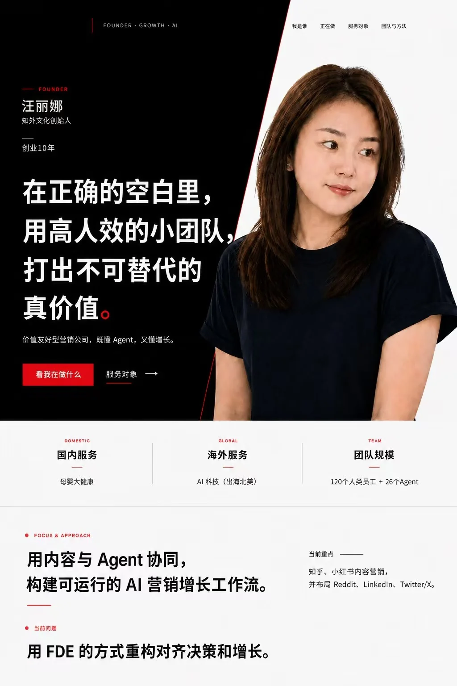
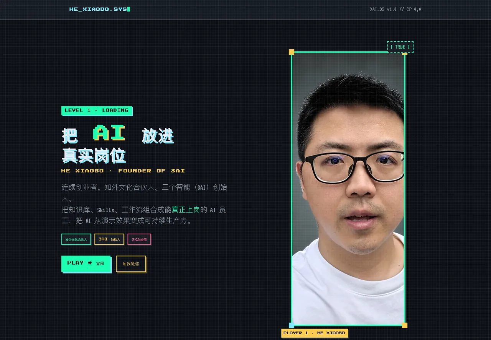
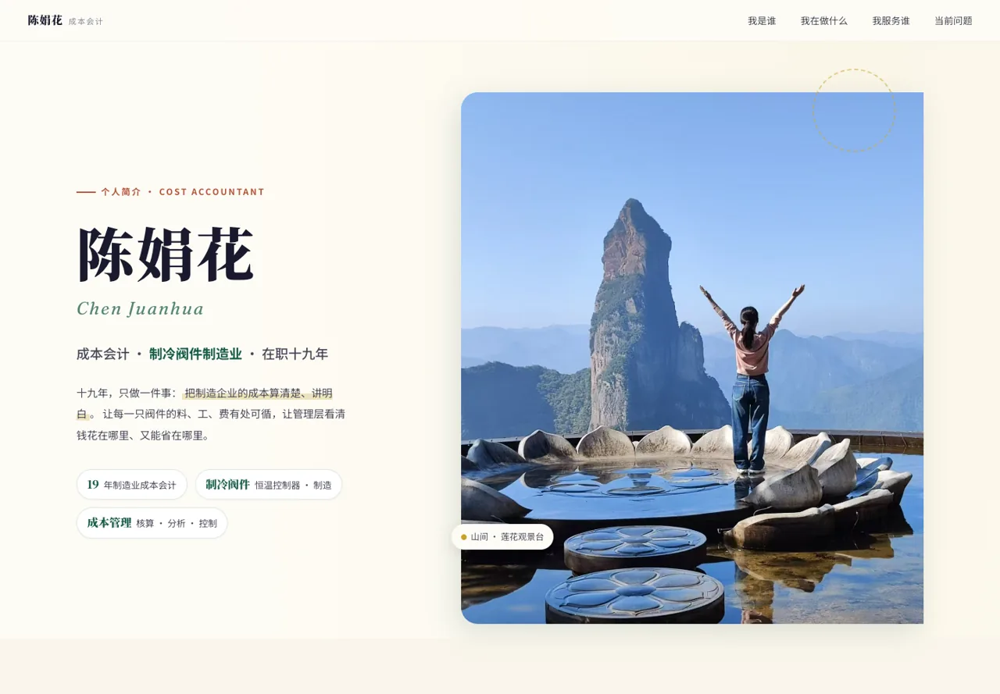
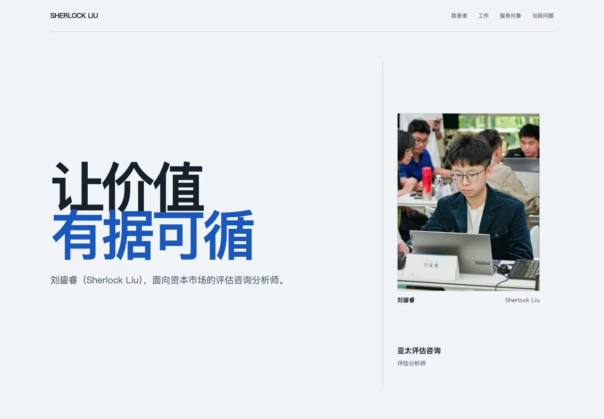
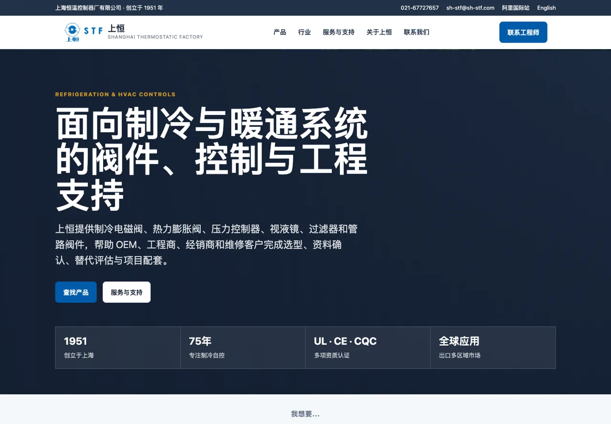
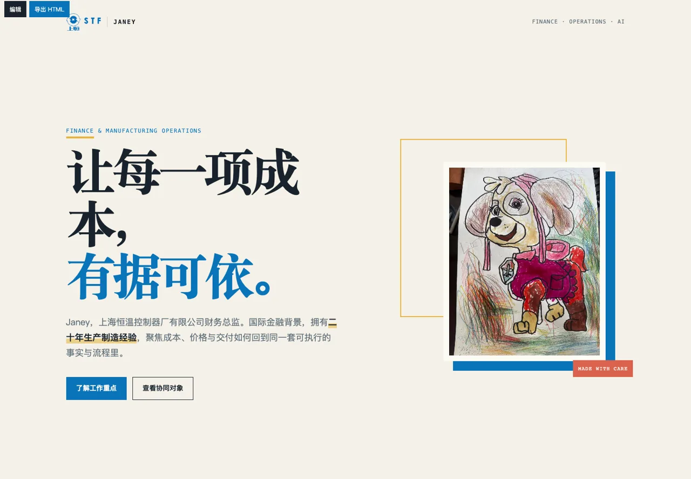
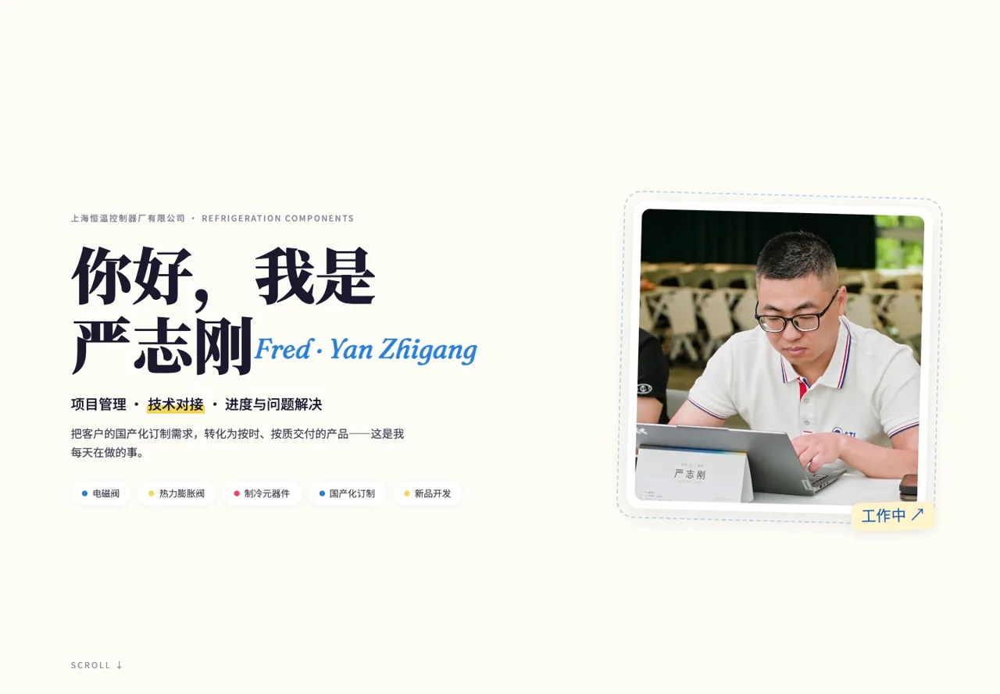

汪丽娜｜创始人与 AI 增长
黑白红的高反差视觉，把“高人效小团队”和“不可替代真价值”变成第一屏就能记住的定位。
原站链接待补
同一个上午、同一个 Agent 练习，长出了完全不同的结果。真正拉开差异的，不是会不会写代码，而是你给 AI 的 Context 是否真实、清晰、可被使用。

我们保留每个原站的视觉个性，用稳定截图做大屏展示，同时保留原站入口。这样下午既能快速巡展，也能随时点进作品，看个人经历、岗位方法、企业能力和品牌表达如何被 AI 重新组织。
黑白红的高反差视觉，把“高人效小团队”和“不可替代真价值”变成第一屏就能记住的定位。

04Guest · Online
05Online
06Online
07Team Build · Online
08Online
10Online上午的结果已经显示出四种可继续生长的方向：个人定位、岗位方法、企业获客与品牌内容。下一步不是再“美化一次”，而是让网站连接资料、案例、服务入口和可复用 Skill。
能否在第一屏讲清“我是谁、服务谁、创造什么价值”，决定网站有没有记忆点。
履历、业务、客户、照片与当下问题越真实，AI 生成的就越不像模板，越像本人。
把布局、叙事和验收标准沉淀为 Skill，下一次不再从一句“做得高级点”重新开始。
继续接入案例、产品、预约、内容与 Agent，让一次课堂作业长成可持续工作的入口。
页面持续收录课堂公开提交。为了稳定展示，本站保存预览截图；作品版权与原站内容归各创作者所有。